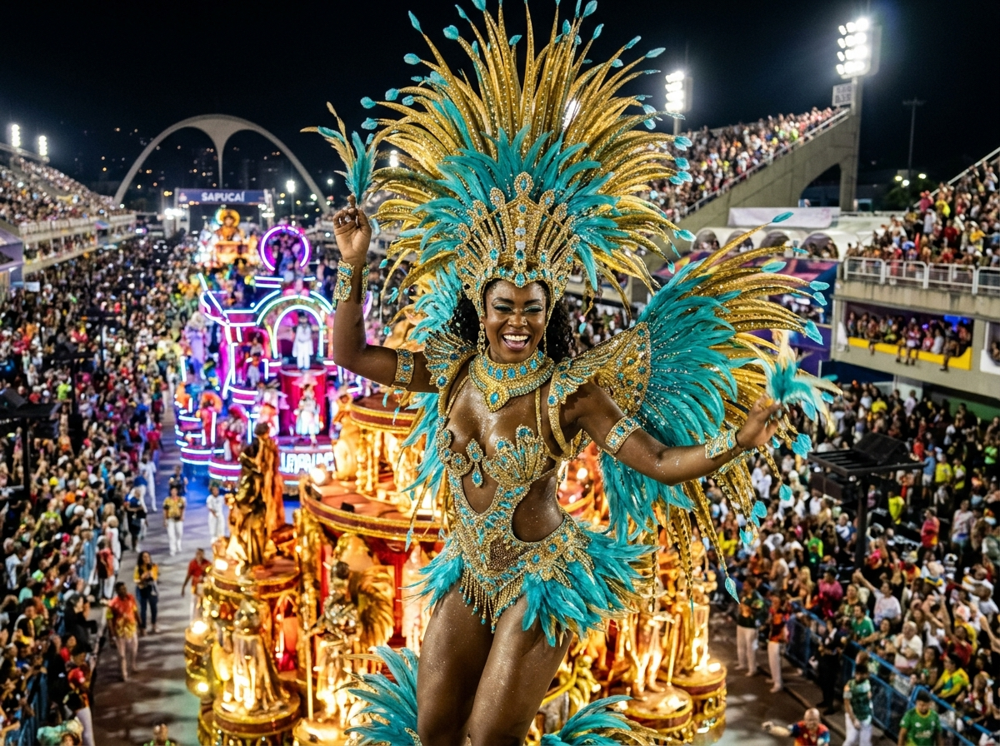

Samba e Carnaval Carioca
Nascido nas tias baianas da Pequena África no Rio, o samba desabrochou nas escolas de samba e nos blocos de rua, exportando a alegria, a batucada e a poesia do Brasil para o mundo.
Salvar RoteiroPolo econômico e cultural mais populoso do Brasil, o Sudeste une a vanguarda das artes e do design à tradição secular das vilas coloniais de Minas, ao nascimento da Bossa Nova e ao maior espetáculo a céu aberto do planeta no Rio de Janeiro.

Nascido nas tias baianas da Pequena África no Rio, o samba desabrochou nas escolas de samba e nos blocos de rua, exportando a alegria, a batucada e a poesia do Brasil para o mundo.
Salvar RoteiroEsculpido no ápice do ciclo do ouro por mestres como Aleijadinho e Mestre Ataíde, Ouro Preto foi a primeira cidade brasileira declarada Patrimônio Mundial da UNESCO.
Salvar RoteiroMovimento que revolucionou a harmonia musical global nos anos 1950 e 1960 pelas mãos de Tom Jobim e Vinicius de Moraes nas praias de Ipanema e Copacabana.
Salvar Roteiro